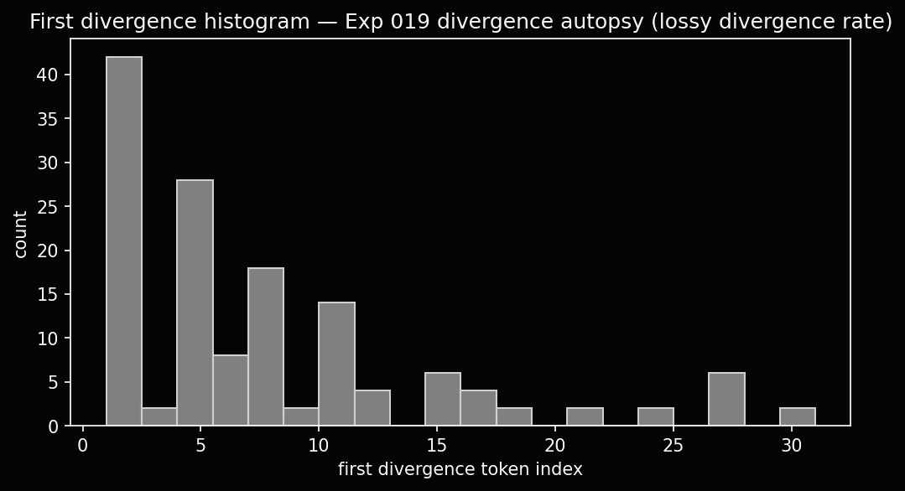
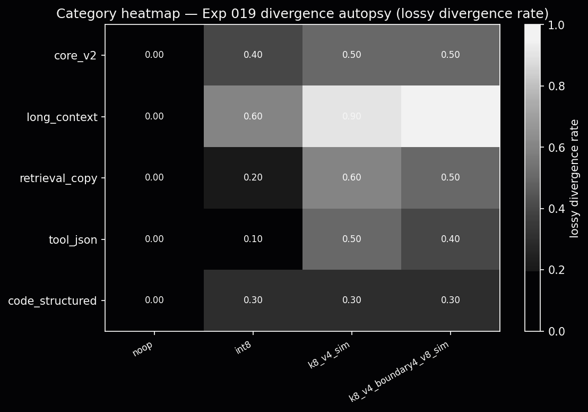

1. Where this started
KV-cache compression is everywhere. Int8 baselines, int4 quantizers, token eviction (H2O, SnapKV), low-rank projections (KIVI, KVTC), asymmetric K/V treatments. Papers report average quality, compression ratios, throughput wins. Production teams ship compressed caches and assume the model “mostly works.”
Under greedy decoding, that assumption is fragile. One perturbed logit can flip the argmax. After that flip, the trajectory is a different sequence, different tokens, different JSON fields, different answers. The question is not whether compression saves memory. It is when the compressed path stops matching the reference, and what mechanism caused the flip.
The KV memory ratio
For a decoder-only transformer at sequence length T, KV cache size scales as:
|KV| = 2 · L · H_kv · d · T · bytes(fp16)
Llama-3.1-8B: L=32, H_kv=8, d=128
T=8192 → ~1.07 GB KV (fp16)
T=128K → ~16 GB KV, comparable to model weightsCompression papers chase 4×-10× stored-byte reductions. ExactKV does not build those compressors. It crash-tests them: same prompt, same model, full-KV reference vs lossy compressed path vs verifier-corrected path, and logs the split.
2. What benchmarks usually miss
Official leaderboard scores (LongBench F1, MBPP pass@1, BFCL accuracy) answer “how good is the output?” ExactKV answers “where did the compressed KV path branch?” Those are related but not the same.
For reviewers outside KV-cache compression: most papers optimize average quality or throughput. ExactKV measures whether greedy decoding still matches full precision token-by-token. That instability that averages can bury. A compressor can drift on 50% of cells and still preserve every valid tool call when a verifier corrects the suffix. It can look fine on aggregate quality while failing catastrophically at token 0. Crash-testing catches both.
3. ExactKV vs serving-system papers
VeriCache and similar systems ask: can we draft from compressed KV, verify against full precision, and recover lossless outputs fast enough to serve? ExactKV asks a different question: when does compressed KV diverge, how often, on what tasks, with what logit signature, across compressors?
We are inspired by draft/verify semantics. We do not reproduce VeriCache’s cross-resource staggering, CPU full-KV staging, or throughput claims. Phase F kernel numbers in the repo are a kernel microbenchmark only, not end-to-end speedup.
Compression implementation papers (Shard, TurboQuant, KIVI, SnapKV) and compression measurement (ExactKV) are complementary. A method can achieve strong quality at 10× stored bytes while still showing early token drift under greedy argmax, or vice versa. We publish the drift evidence. We do not claim their compression ratios or throughput.
4. Three paths, four metrics
Every ExactKV cell runs:
- Full-KV: uncompressed reference (greedy argmax).
- Lossy: compressed KV only, no correction.
- ExactKV: draft from compressed KV, verify each token, accept prefix, correct on mismatch.
Recorded per cell:
- first-divergence index: first token where lossy ≠ full-KV.
- acceptance rate: fraction of drafted tokens accepted before mismatch.
- token-level divergence: did lossy path diverge at all?
- exactkv_failure: did final ExactKV output ≠ full-KV? (hard gate: 0 on all cited panels.)
for each draft token t from compressed KV:
if t == full_KV_argmax_at_t:
accept t
else:
record first_divergence_index
emit full_KV token, correct suffix
breakDivergence rate and acceptance rate are not redundant. A compressor can diverge rarely but reject drafts often (near-tie noise). Another can diverge on 90% of cells but still accept 85% of tokens before the flip (late drift). Read them together.
5. The int4 surprise: same model, different task
The headline split is int4_sim (4× per-tensor simulated quantization) on Llama-3.1-8B and Mistral-7B-Instruct across task families:
int4_sim)Same models, same compressor class, task type dominates. Source: reports/external_panels/.
On the 1,500-cell core panel, int4_sim drifts in 52% of cells with mean first divergence ≈ 2.0, but the histogram is heavy-tailed: index 1 → 78 cells, index 3 → 39, index 8 → 13. A mean of 2.0 understates how many failures happen on token 1.
6. Generation length scales drift 7×
On BFCL tool-calling, holding prompts and context fixed, increasing the output budget exposes more opportunities for argmax flips:
Main takeaway: Short generation budgets understate tool-calling drift, int4 climbs from 9% at 16 tokens to 62% at 256.
| max_new_tokens | int4_sim drift | int8 drift |
|---|---|---|
| 16 | 9% | ~0% |
| 32 | 13.5% | ~0% |
| 128 | 38.5% | 0.5% |
| 256 | 62% | 1.0% |
Short-generation panels (mnt=16/32) understate tool-calling drift. The BFCL validity panel (mnt=128/256) is the first to measure complete JSON tool calls, and shows ~50% int4 drift with 100% validity preservation when full-KV produced a valid call.
7. Context length: near-ceiling on reading tasks
HF LongBench v2.6 (720 cells, real HuggingFace prompts, 2K/4K/8K buckets). Int4_sim divergence by context:
Main takeaway: On LongBench reading, int4 is near-ceiling at every context bucket, task family matters more than context length.
| Context | int8 drift | int4_sim drift |
|---|---|---|
| 2K | 21% | 95% |
| 4K | 27% | 86% |
| 8K | 25% | 90% |
int4_sim is near-ceiling at all context lengths on open-text reading, task type matters more than context once you are in the LongBench regime. Int8 is the opposite pattern: near-zero on code/tool panels, but 15-27% on LongBench reading.
LongBench per-subset int4_sim drift (both models)
| Subset | Type | Llama | Mistral |
|---|---|---|---|
| 2wikimqa | multi-hop QA | 100% | 100% |
| hotpotqa | multi-hop QA | 100% | 100% |
| narrativeqa | reading comp. | 100% | 100% |
| gov_report | summarization | 92% | 100% |
| lcc | code completion | 92% | 42% |
| trec | classification | 100% | 67% |
lcc (code completion) is an outlier, substantially lower drift than reading comprehension on the same panel.
8. Three failure modes: logit autopsy
With --store-top-k-logits enabled on LongBench, BFCL validity, and H2O panels, we analyzed 1,103 divergent cells at the first flip. Three mechanistic signatures:
Main takeaway: int8 flips late on near-ties. int4 shifts the distribution. H2O-style eviction destroys context immediately (median divergence at token 1).
| Class | Mechanism | Top-1 flip | Near-tie (<.05) | Mean lossy rank | Median 1st div. |
|---|---|---|---|---|---|
int8 | Near-tie noise | 69% | 66% | 2.4 | 22 |
int4_sim | Distribution shift | 83% | 26% | 3.5 | 8 |
| H2O-style | Attention destruction | 100% | 0% | 6.7 | 1 |
int8 flips late on contested logits. The model was already uncertain. int4_sim shifts probability mass to rank-3-4 alternatives even when full-KV was moderately confident. H2O-style eviction deletes context tokens. Lossy rank jumps to ~7 and divergence is immediate (median index 1). Same verifier catches all three. exactkv failures: 0.
9. Key figures
Headline panels rendered from committed artifacts (reports/scale_7b/, reports/external_panels/).
Token-level before/after snippets, including KIVI catastrophic corruption, are in section 14.
Headline evidence · tested panels only
exactkv_failures=0


10. Downstream validity, drift ≠ task failure
BFCL validity panel (1,200 cells, mnt=128/256). Full-KV produced a parseable JSON tool call in 106/400 cells (26.5%, prompts and truncation limited, not a “model can't tool-call” claim). Despite ~50% int4 drift:
Main takeaway: ~50% int4 drift on long-gen BFCL, yet 100% validity preservation when full-KV produced a valid tool call.
| Category | int4 drift | Full-KV valid | ExactKV valid | Preserved |
|---|---|---|---|---|
| simple | 49% | 38/104 | 38/104 | 100% |
| parallel | 55% | 31/104 | 31/104 | 100% |
| multi_turn | 60% | 24/104 | 24/104 | 100% |
| ast_eval | 35% | 13/88 | 13/88 | 100% |
“Preserved” means ExactKV output matches full-KV, not that full-KV always succeeds. The verifier closes the gap between drift rate and output validity on tested panels.
11. The compressor curve: bit-width and granularity
The 6%/90% hook is one point. GPU-validated built-ins (v30 panel batch, both models, task-family means):
Main takeaway: Per-vector int4 helps on structured tasks. int6 beats per-vector int4 on LongBench reading. Bit-width and granularity interact by task.
| Compressor | MBPP | BFCL | LongBench | Notes |
|---|---|---|---|---|
int8 | 0% | 0% | ~18% | Real baseline |
int6_sim | 0% | 0% | ~42% | 6-bit sim, between int8 and int4 |
int4_per_vec_sim | 0% | 0% | ~56% | Per-vector int4 (KIVI/KVQuant-style granularity) |
int4_sim | ~6% | ~52% | ~85% | Per-tensor int4, headline drift case |
| H2O-style 75% kept | n/a | n/a | 100% | Eviction class (LongBench only in v2.8 panel), not quantization |
Granularity vs bit-width is task-conditional. Per-vector int4 matches int8 on code/tool tasks but still accumulates error at 8K reading context. Int6 (higher bit-width, per-tensor) beats per-vector int4 on LongBench, at long context, bit-width still matters alongside granularity.
Quantization error vs drift (why int4_per_vec helps on structured tasks)
On realistic KV shape [1, 32, 512, 64] with outlier heads, mean absolute quantization error vs int8:
| Compressor | MAE × int8 | Granularity |
|---|---|---|
| int8 | 1.00× | per-tensor |
| int4_per_vec_sim | 2.06× | per-vector |
| int6_sim | 4.10× | per-tensor |
| int4_sim | 12.59× | per-tensor |
Per-vector int4 has 6× lower error than per-tensor int4, and 30pp lower LongBench drift than int4_sim, but int6_sim still wins on reading at 8K despite higher MAE.
12. H2O-style eviction, worse than int4 at matched budget
Token eviction is a different failure class. H2O-style simulation (attention-sink + recency window, keep_ratio 0.75/0.50/0.25) on LongBench: 100% divergence at all keep ratios, median first divergence index 1, mean lossy rank 6.7. Eviction destroys anchoring context immediately, worse than int4_sim at a matched ~4× memory story on reading tasks.
Claim boundary: H2O-style simulation, not faithful H2O GPU kernel. Still useful as a class diagnostic.
13. Faithful upstream adapters (1,568 cells, appendix)
Built-in sims map the design space. Phase D3 wires real upstream algorithms on the same crash-test grid, in a separate artifact tree (reports/external_panels/faithful/), not merged into the 8,132 headline total. These are adapter smoke tests: they ask whether ExactKV can run real upstream code paths and how much they drift, not which compressor wins.
Wave-1 (both models, 864 cells)
| Role | Compressor | Mistral (432 cells) | Llama (432 cells) |
|---|---|---|---|
| Real baseline | int8 | 7.6% | 9.0% |
| Adapter smoke | snapkv_experimental | 97.2% | 90.3% |
| Integration diagnostic | kivi_offline_r32 | 100% | 100% |
864 GPU cells (432 per model: LongBench 216, BFCL 120, MBPP 96). exactkv_failures=0 throughout. int8 is the only non-catastrophic real compressor in wave-1 (~8-9% combined drift). Faithful SnapKV runs end-to-end via kvpress but shows 90-97% drift. KIVI offline r32 is catastrophic on every cell (adapter diagnostic only. Not production KIVI).
Wave-2 smoke (Mistral only, 128 cells, complete)
MBPP + BFCL structured-task smoke comparing int8, KnormPress, TurboQuant, and SnapKV. Pulled from RunPod 2026-07-01. Not merged into the 8,132 headline total.
| Task | int8 | turboquant_experimental | kvpress_knorm | snapkv_experimental |
|---|---|---|---|---|
| MBPP (64 cells) | 0.0% | 6.2% | 75.0% | 87.5% |
| BFCL (64 cells) | 0.0% | 0.0% | 81.2% | 100.0% |
| Combined (128) | 0.0% | 3.1% | 78.1% | 93.8% |
Key finding: turboquant_experimental shows near-int8 drift on structured tasks in this smoke panel (3.1% combined. 0% on BFCL). KnormPress and SnapKV remain catastrophic. Mistral-only smoke. Wave-3 (below) completes the TurboQuant story on LongBench. Full tables: technical report §6.17.1.
Wave-3 (both models, 576 cells, complete)
Full grid: HF LongBench + BFCL + MBPP on both models, int8 vs turboquant_experimental only. Pulled from RunPod 2026-07-07. Not merged into the 8,132 headline total. exactkv_failures=0 throughout.
| Task family | Cells | int8 drift | turboquant_experimental drift |
|---|---|---|---|
| HF LongBench | 288 | 16.7% | 64.6% |
| BFCL | 160 | 0.0% | 5.0% |
| MBPP | 128 | 0.0% | 1.6% |
| Combined | 576 | 8.3% | 34.0% |
| HF LongBench by model | int8 | turboquant_experimental |
|---|---|---|
| Llama-3.1-8B (144 cells) | 18.1% | 62.5% |
| Mistral-7B (144 cells) | 15.3% | 66.7% |
Key finding: TurboQuant looks fine on structured code/tool tasks (1.6–5.0% drift) but fails the long-context reading stress test (~63–67% LongBench drift, both models). int8 remains the only non-catastrophic real compressor in this appendix grid (8.3% combined). Offline Python adapter only. Not a deployment claim. Artifacts: reports/external_panels/faithful/wave3/. Full tables: technical report §6.17.2.
14. Divergence case studies
Token-level snapshots from headline GPU panels (core scale, HF LongBench, BFCL validity/export, faithful KIVI wave-1): full-KV greedy output, lossy compressed draft, and ExactKV verifier output on the same cell. Includes subtle int4 prose flips and catastrophic adapter corruption (kivi_offline_r32 → !!!!). These measure drift, not official LongBench/BFCL leaderboard scores.
Curated from headline GPU panels (HF LongBench, BFCL validity/export, core scale). Drift diagnostics only. Not official benchmark leaderboard scores.
core_scale · capital_france
a city of many faces. It is a city of history, culture, and
a city of art, culture, and history. It is also a city of
a city of many faces. It is a city of history, culture, and
longbench · narrativeqa
face, with its high forehead and its straight nose, they were positively grotesque. I had never seen a man so big, and I had never seen
face I wondered whether I had ever seen anything so much like a mask. I had been told at Cambridge that Gravener was
face, with its high forehead and its straight nose, they were positively grotesque. I had never seen a man so big, and I had never seen
longbench · gov_report
is governed by the provisions of 10 U.S.C. 2306b and by the implementing regulations in DOD's Federal Acquisition Regulation (FAR)
is governed by 10 U.S.C. 2306b, which is a permanent statute. The statute was created by Section 909 of the FY198
is governed by the provisions of 10 U.S.C. 2306b and by the implementing regulations in DOD's Federal Acquisition Regulation (FAR)
bfcl · parallel
},
"city": {
"type": "string",
"description": "The city where the purchase is made."
},
"state": {
"type": "string",
"description": "The state where
": "Illinois"
}
},
{
"name": "calculate_sales_tax",
"arguments": {
"purchase_amount": 52.33,
"city": "Sacramento",
"state": "California"
}
},
{
"name": "calculate_sales_tax",
},
"city": {
"type": "string",
"description": "The city where the purchase is made."
},
"state": {
"type": "string",
"description": "The state where
bfcl · ast_eval
escription": "The InputStream from which file contents are read."
},
"force": {
"type": "boolean",
"description": "If true, the operation is forced, otherwise it's a normal set content
tents of the file."
},
"force": {
"type": "boolean",
"description": "If true, the operation is forced, otherwise it's a normal set content operation."
},
"keepHistory": {
"
escription": "The InputStream from which file contents are read."
},
"force": {
"type": "boolean",
"description": "If true, the operation is forced, otherwise it's a normal set content
bfcl · multi_turn
. Make sure to create the directory User: Perform a detailed search using grep
. Make sure to create the directory. User: Perform a detailed search using grep
. Make sure to create the directory User: Perform a detailed search using grep
longbench · narrativeqa
face, with its high forehead and its straight nose, they were positively grotes
!!!!!!!!!!!!!!!!
face, with its high forehead and its straight nose, they were positively grotes
core_scale · json_tool
"New York", "country": "
"New York", "temperature":
"New York", "country": "
15. Evidence inventory
Two separate buckets: headline panels (8,132 GPU cells, public total) and faithful adapter appendix (1,568 cells, tracked separately). Faithful panels are not included in the 8,132 headline count.
Headline panels · 8,132 GPU cells
Public totalCompleted GPU panels with exactkv_failures=0. Not official benchmark scores.
| Panel | Cells | Models | What it tests |
|---|---|---|---|
| Core scale panel | 1,500 | Llama + Mistral | Leaderboard compressors |
| HF LongBench (real HF) | 720 | Both | Reading/summarization drift |
| BFCL validity (long-gen) | 1,200 | Both | Tool-call validity preservation |
| BFCL export-50 | 1,200 | Both | Short-gen tool drift |
| H2O-style eviction | 800 | Both | Eviction class |
| v30 int6 + int4_per_vec panel | 1,568 | Both | Compressor curve extension |
| MBPP + pilots + evidence-plus | ~1,144 | Mixed | Code/smoke supplements |
| Headline total | 8,132 | 6,564 pre-v30 + 784 + 784 v30 batches | |
Faithful adapter appendix · 1,568 cells
Separate from 8,132Real upstream adapters in reports/external_panels/faithful/. See section 13 for wave tables and findings.
| Panel | Cells | Models | What it tests |
|---|---|---|---|
| Faithful wave-1 | 864 | Both | int8 + SnapKV + KIVI r32 smoke |
| Faithful wave-2 | 128 | Mistral | KnormPress + TurboQuant vs int8/SnapKV |
| Faithful wave-3 | 576 | Both | int8 + TurboQuant full grid (LongBench/BFCL/MBPP) |
| Appendix total | 1,568 | 864 + 128 + 576, not merged into headline | |
Full reconciliation card: technical report Appendix A. Public cite: ExactKV research release · git tag v-release.
16. Core compressor leaderboard
Rankings from the 1,500-cell scale panel (reports/scale_7b/raw.json). Score = 0.35·acceptance + 0.25·verifier_agreement + 0.20·(1−norm. First divergence) + 0.10·(1−failure rate) + 0.10·stability.
Main takeaway: On the 1,500-cell core panel, noop and int8 lead. int4_sim shows ~50% divergence with zero ExactKV failures.
| # | Compressor | Model | Score | Acceptance | Divergence |
|---|---|---|---|---|---|
| 1 | noop | Llama-3.1-8B | 1.000 | 1.000 | 0.000 |
| 2 | int8 | Llama-3.1-8B | 1.000 | 1.000 | 0.000 |
| 3 | noop | Mistral-7B | 1.000 | 1.000 | 0.000 |
| 4 | int8 | Mistral-7B | 0.983 | 1.000 | 0.173 |
| 5 | int4_sim | Llama-3.1-8B | 0.859 | 0.852 | 0.520 |
| 6 | int4_sim | Mistral-7B | 0.851 | 0.837 | 0.507 |
| 6 | spectralquant fallback/proxy | Llama-3.1-8B | 0.859 | 0.852 | 0.520 |
| 8 | spectralquant fallback/proxy | Mistral-7B | 0.851 | 0.837 | 0.507 |
| 9 | shard probe-first | Llama-3.1-8B | 0.732 | 0.632 | 0.227 |
| 10 | shard probe-first | Mistral-7B | 0.727 | 0.623 | 0.247 |
Full JSON: leaderboard_final.json. Registry slots labeled fallback/proxy or probe-first are not headline evidence.
17. What we measure but do not claim
- Not a production serving system. No throughput or active GPU memory savings claims.
- Does not reproduce VeriCache. Inspired by draft/verify semantics only.
- External panel drift rates are not official LongBench/BFCL/MBPP scores.
- Compression ratios cited in the report are stored tensor byte ratios, not VRAM at serving time.
- KIVI offline / SnapKV faithful results characterize adapter integration paths, not production CUDA kernels.
exactkv_failures=0is a hard gate on tested panels, not “compression is always safe everywhere.”
How this relates to Shard, TurboQuant, and KIVI
Shard (and similar systems) engineer toward quality-neutral 10× KV reduction, asymmetric K/V treatment, fused attention on compressed coefficients, streaming decode paths, profiler-driven throughput work. That is implementation depth ExactKV deliberately does not duplicate.
ExactKV asks: under greedy decoding, when does each compressor's KV approximation first change the argmax? We can crash-test Shard's HuggingFace Cache adapter the same way we crash-test int4_sim, once wired, and publish drift + exactness curves alongside built-in baselines.
TurboQuant targets ~4-6× with sphere-uniform quant theory. KIVI targets asymmetric low-bit quant with streaming policies. ExactKV's faithful adapters (KnormPress, TurboQuant experimental, KIVI r32) exist to run those upstream algorithms on the same grid, not to re-derive their math.
18. Reproduce it
Every published number traces to an on-disk artifact. One-command regeneration where possible.
# Install pinned public artifact
pip install git+https://github.com/utkarshg20/ExactKV.git@v-release
# No GPU: verify artifacts + claim safety
python3 scripts/exactkv_repro.py --reports-only
python3 scripts/check_site_claims.py
python3 scripts/validate_final_release_package.py
# Refresh site JSON from headline artifacts
bash scripts/sync_site_data.sh
# Analysis packs
python3 scripts/build_longbench_overlap_pack.py --write
python3 scripts/build_downstream_validity_pack.py --write
python3 scripts/build_acceptance_drift_analysis.py --write
# GPU: headline panel
python3 scripts/run_phase_a_scale_benchmark.py --device cuda --dtype float16
# GPU: external LongBench / BFCL / faithful adapters
bash scripts/run_external_panel.py --help
bash scripts/setup_faithful_compressor_env.sh
Full technical report: paper/ExactKV_Technical_Report.md ·
PDF ·
research release (v-release).
Source of truth: reports/scale_7b/raw.json (1,500-cell core leaderboard) + reports/external_panels/ (8,132-cell external grid).
Case-study gallery: site/data/case_studies.json (from scripts/curate_site_case_studies.py).
Reviewer takeaway
Three bullets to remember
- Contribution: KV-cache compression can preserve final verified outputs while still causing early greedy-token drift. Average benchmark scores can hide that instability.
- Evidence: 8,132 headline GPU cells, int4 drift from 6% (code) to ~90% (reading), 106/106 BFCL tool calls preserved when full-KV valid,
exactkv_failures=0on cited panels. - Boundary: ExactKV is a drift crash-test and measurement framework. Not a production serving system, not VeriCache, not official benchmark scoring.